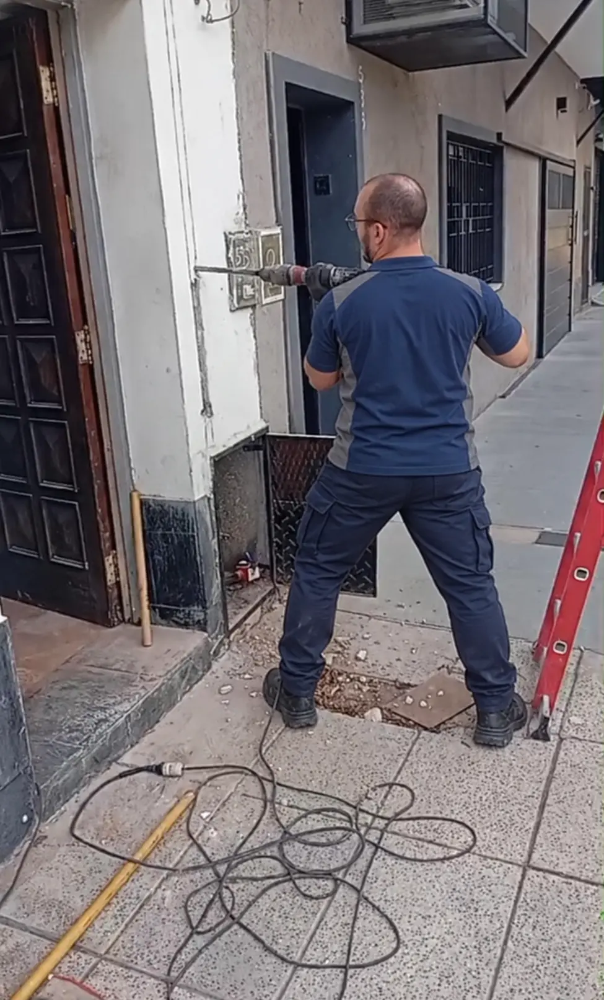
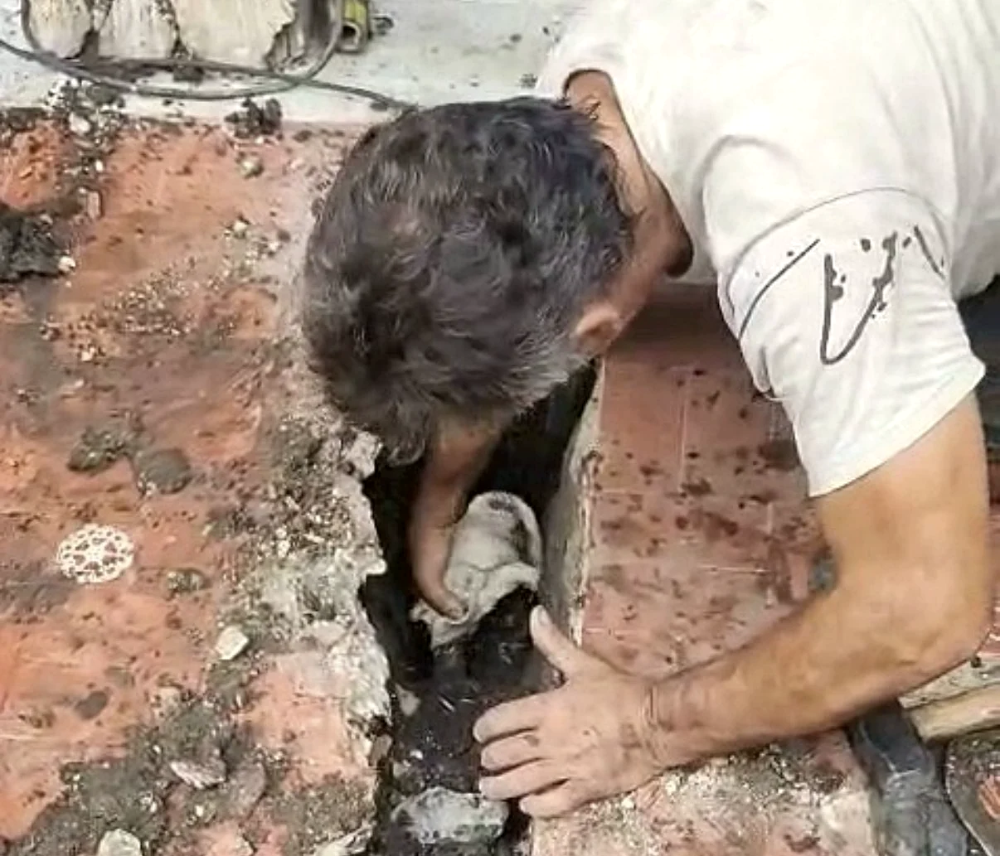
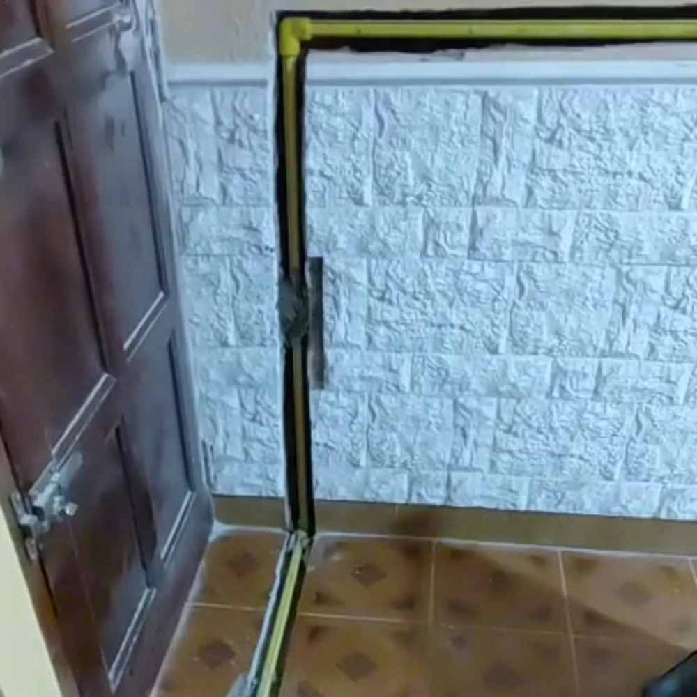

Pérdidas de gas
Buscamos pérdidas y hacemos una prueba para comprobar que la instalación no tenga fugas.
Categoría 2 · Matrícula verificable
Más de 20 años de experiencia en instalaciones, detección de fugas, pruebas de hermeticidad y colocación de calefones, termotanques y otros artefactos a gas.

Servicios
Evaluación de cada trabajo de forma particular, con una explicación clara de lo que hay que hacer.
Buscamos pérdidas y hacemos una prueba para comprobar que la instalación no tenga fugas.
Instalación, reparación, colocación y mantenimiento de calefones, termotanques, cocinas, estufas y otros artefactos a gas.
Planos y cambios necesarios para que la instalación cumpla con los requisitos.


Atención directa
Rubén coordina personalmente cada consulta y define la visita según el tipo de trabajo. Sin respuestas automáticas ni intermediarios.
Trabajos frecuentes
Consultá por la colocación, conexión o reemplazo de un calefón a gas.
Coordiná la evaluación y colocación de un termotanque a gas en CABA o GBA.
Detección de pérdidas y pruebas de hermeticidad para revisar la instalación.
Revisión, planos y adecuaciones necesarias según las características del trabajo.
Zona de atención
DíasLunes a viernes
HorarioA convenir según el trabajo
¿Necesitás una visita?
Contale brevemente qué necesitás y en qué zona estás.